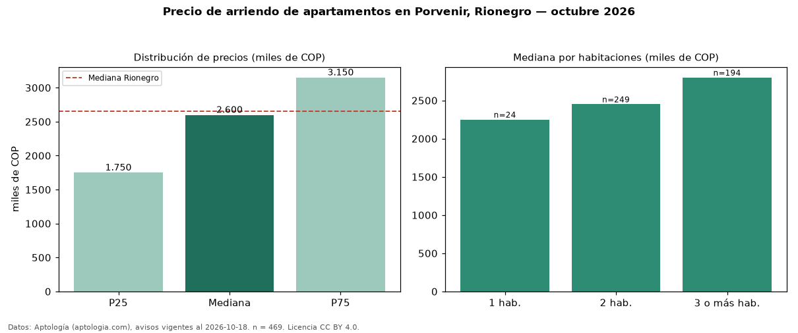

Precio de arriendo de apartamentos en Porvenir, Rionegro — octubre 2026
En El Porvenir, Rionegro, la mediana de canon mensual de apartamentos es COP 2,60 millones, según 469 avisos vigentes. Prácticamente coincide con la mediana de Rionegro para apartamentos (COP 2,65 millones). Por metro cuadrado, la mediana es COP 37.179/m² al mes (n = 469 avisos con área), 1 % por debajo de Rionegro (COP 37.500/m²). Con el precio por m² de venta del mismo segmento (COP 7,26 millones/m²), la rentabilidad bruta implícita es 6,1 % anual (aproximación con medianas de ofertas distintas). El área mediana anunciada es 68 m². El segmento con más oferta es el de 2 habitaciones (249 avisos, mediana COP 2,45 millones); pasar de 1 habitación a 3 o más habitaciones cambia la mediana +24 %. Por precio mediano es el puesto 8 de 17 barrios de Rionegro con al menos 30 avisos de apartamentos en arriendo (COP): en la franja media. La mitad central de los avisos va de COP 1,75 millones a COP 3,15 millones (razón 1,8), una dispersión moderada. Datos: Aptología (aptologia.com), CC BY 4.0 — https://www.aptologia.com/arriendo/rionegro/porvenir. Archivos: PDF, CSV con las cifras y gráfica PNG.

| Avisos únicos | 469 |
|---|---|
| Percentil 25 | COP 1.750.000 |
| Mediana | COP 2.600.000 |
| Percentil 75 | COP 3.150.000 |
| Mediana por m² | COP 37.179 |
Fuente: avisos vigentes de portales inmobiliarios recopilados por Aptología, deduplicados (mínimo 30 avisos únicos por celda). Precios pedidos, no cerrados. Fecha: 2026-10-18.